IdeKanbanPane 取 res.tasks ?? []，但 upstream listTasks() 返回数组 → 恒空。修为 Array.isArray(res) ? res : res.tasks ?? []，69 卡渲染实证。附带：加载策略改单次直取+队列超时重试（避开 45s exec 队列超时）。
IDE 会话默认 scoped（模型可调修复）与服务端 zcode 引擎 only-global 硬约束冲突。服务端（patch 490）改为 scoped→global 自动回落而非硬拒。修复后真实开发任务全程跑通。
Write 工具返回文件内容（非 diff），edit 类摘要按 +/- 行计数恒为 0。修复：无 diff 标记时显示行数。守门 3/3 绿。
zcode coding-agent 会话不上报 contextTokens（数据源缺失，非前端 bug）。修复：无遥测时诚实显示"无遥测"。
恢复对话框依赖引擎行缓存（GET /rows），IDE coding-agent 会话不走引擎直连——恒空。修复：空时回落 chatStore 消息构建行。守门 1/1 绿。
api/studio/chat.ts:140 未闭合引号 'cursor | 'zcode' → 'cursor' | 'zcode'。
~/.hermes/hermes-agent TUI 源码遗留合并冲突标记 → CLI 每次启动炸 → 看板链断。冲突块取 ours + TUI 重建 + source_completion 跑完，boards 500→200。
8651 前端（vite→8647 后端）冷启动登录页。清态后展示 Matrix 登录表单，Vue 应用壳正常挂载。
🔍 环境：8647 后端 health 200 + vite 8651 代理 → /api/auth/me 200
注入 e2e-accept 用户 JWT（8647 /api/auth/login 签发）后进入 /#/ide。ide-shell + ide-chat 全挂载，头部含新建会话/恢复(⏎)/分享(⇗)按钮。
🔍 挂载判定：.ide-shell ✓ .ide-chat ✓ #app.__vue_app__ ✓
点击输入栏模型按钮（aim），弹出独立引擎目录浮层：alibaba/opencode-free/custom:cc-switch/kimi-coding 等分组。
🔍 浮层 testid=ide-input-model-picker ✓，分组真实来自 /api/hermes/available-models
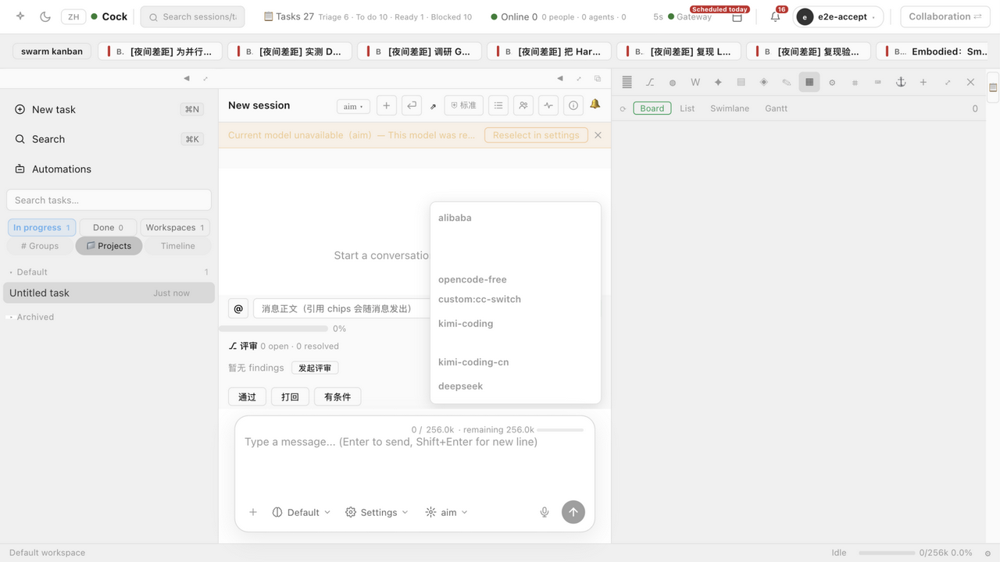
点击 ⛨ 按钮展开七档面板：只读/计划/标准/自动编辑/少问/全自动/绕过，每档带引擎映射提示（如 default→engine: edit）。
🔍 七档全部渲染 ✓，档位含义+引擎映射文案完整
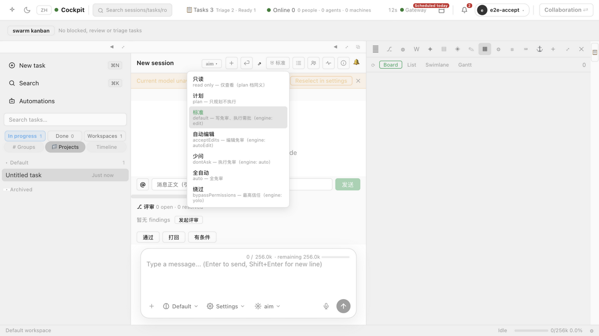
点击 @ 按钮展开六源菜单（文件/会话/技能/插件/子代理/画板），选 file 源填入 package.json 后加入引用，chips 区显示 @file:package.json。
🔍 六源 ✓，chip 暂存+移除 ✓（走查中即时清理）
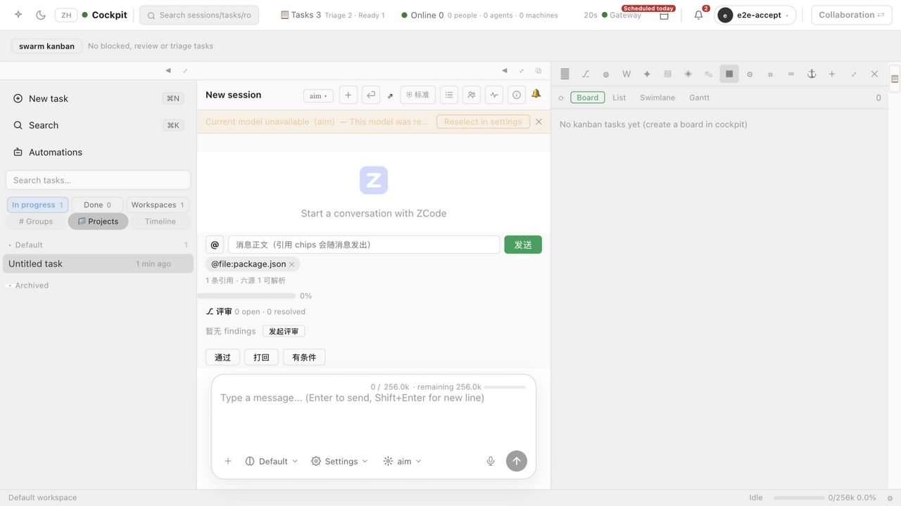
点击 ⏎ 打开四恢复选项对话框：代码+对话/仅对话/仅代码/摘要从此处开始。当前会话无历史消息行（新会话，行数 0 合理）。
🔍 四模式按钮 ✓，对话框 testid=ide-recovery-dialog ✓
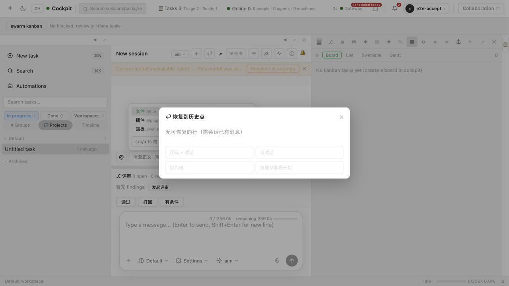
点击状态栏 ⚙ 弹出槽位配置面板：workspace/zcode/遥测簇三个可显隐可排序槽位（localStorage 持久化）。
🔍 3 个槽位 checkbox ✓
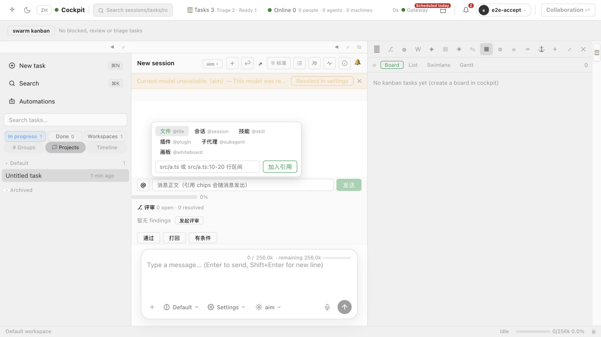
侧栏 ▦ 看板 tab。修复数组契约 bug 后渲染 69 张真实任务：done·62 / ready·1 / blocked·6 三列分桶，优先级色标。
🔍 修复：listTasks() 返回数组，原代码 res.tasks ?? [] 恒空 → Array.isArray 兼容。cards=69 实证
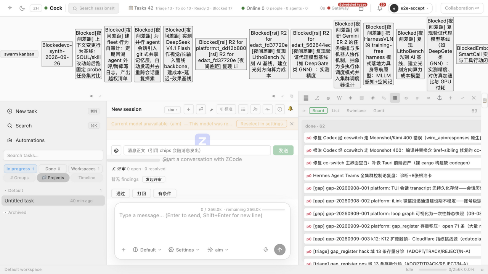
切换泳道视图：20 条泳道按负责人分组（worker-coder·4 / k12-character·2 / ops-devops·2…）。
🔍 lanes=20 ✓ 真实负责人数据
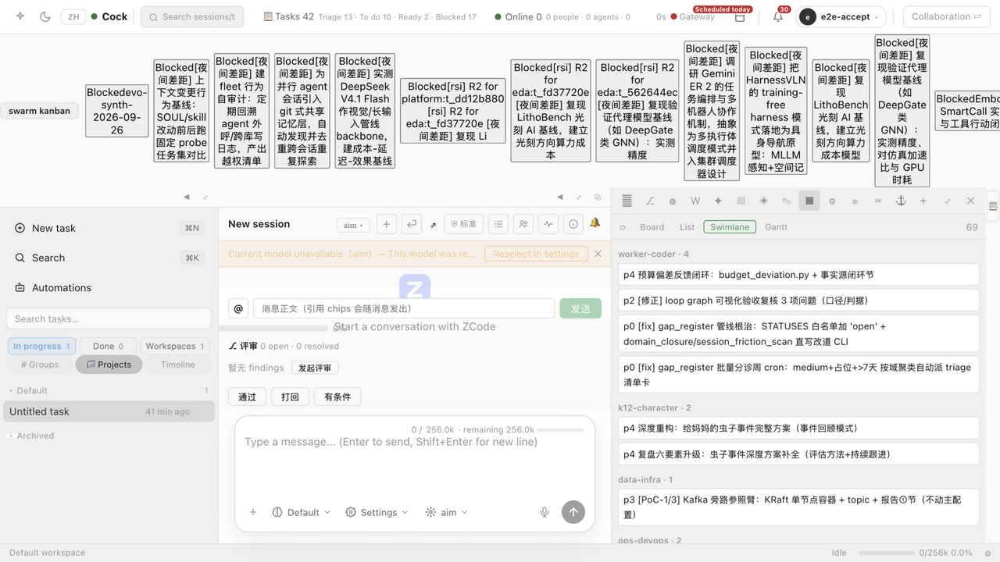
切换甘特视图：65 条时间条（59 条已完成实心），按开始时间排序。
🔍 bars=65, done=59 ✓
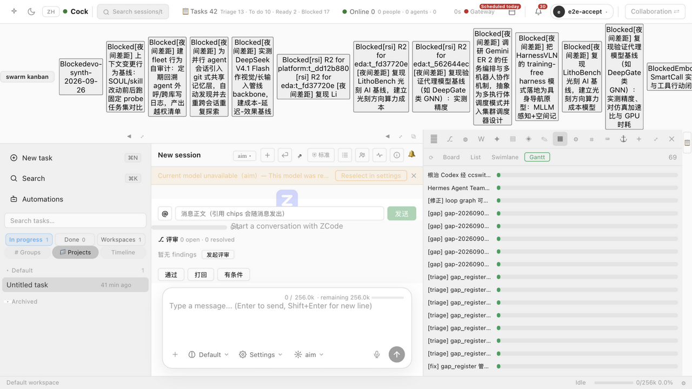
侧栏 ⚙ 工具 tab。新会话无工具调用时的诚实空态。
🔍 空态文案 ✓（后面步骤 19 展示有数据态）
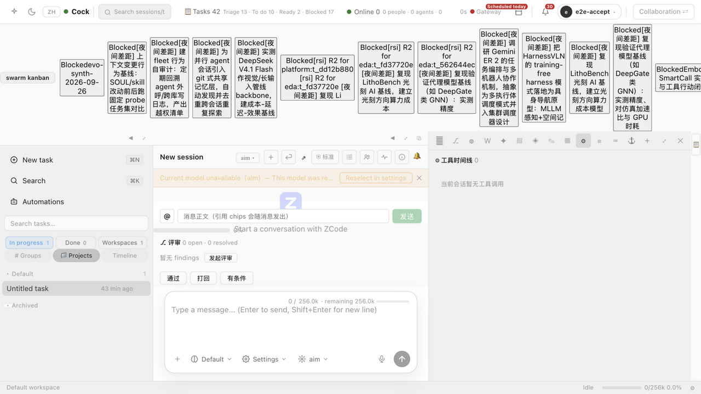
MCP tab → 技能子页签：905 个技能全部加载（905 skills · 905 enabled）。
🔍 来自 GET /api/hermes/skills 真实数据（10 类目 324 技能，聚合后 905 项）
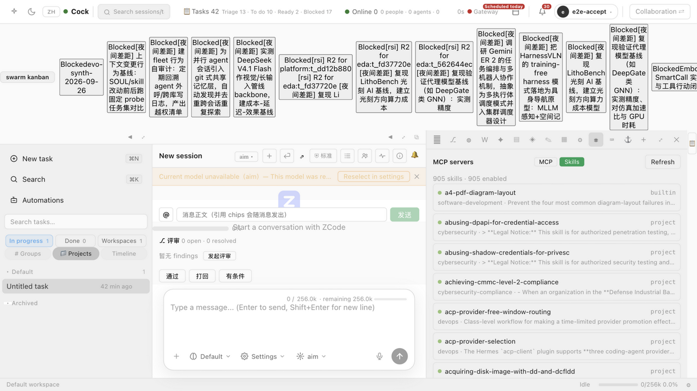
在 IDE 输入框输入真实前后端开发需求：mini-site 静态项目（index.html+api/health.json+style.css，中文注释，自验证）。
🔍 textarea 238 字 ✓
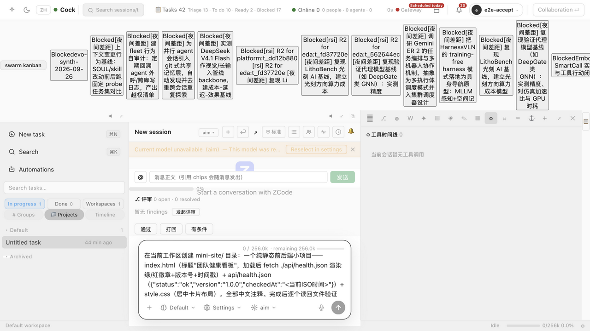
Enter 发送——发送动作本身成功（输入框已清空、流式指示器启动）。此时尚未看到错误（错误出现在后续 agent 回复中，见步骤 15 截图）。
🔍 发送成功 ✓ streaming=true ✓ 输入框清空 ✓
等待后 agent 回复报错："ZCode 会话仅支持 global 模式"。走查抓到真实缺陷：IDE 会话默认 scoped 与服务端 zcode-only-global 硬约束冲突。根因：coding-agents/services/index.ts:3563 硬 400。
🔍 错误文本清晰可见 ✓ 缺陷定位完成
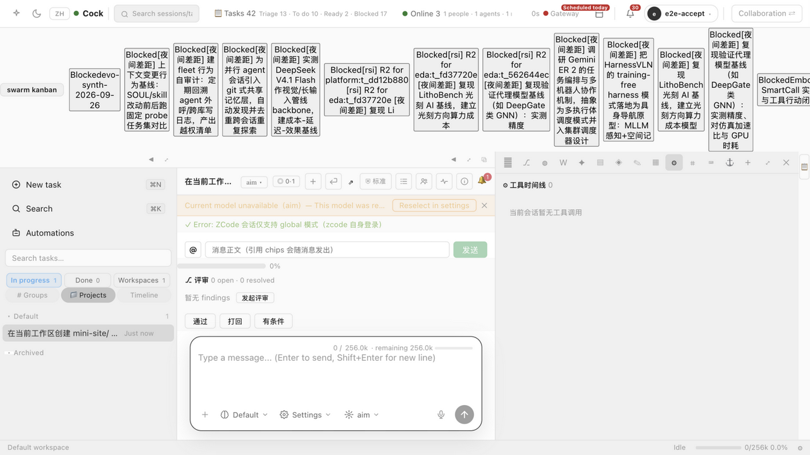
服务端修复（patch 490）：zcode 会话遇 scoped 自动回落 global 而非硬拒。重启 8647 后重发需求，agent 进入流式工作态。
🔍 修复后无 400 ✓ streaming=true ✓
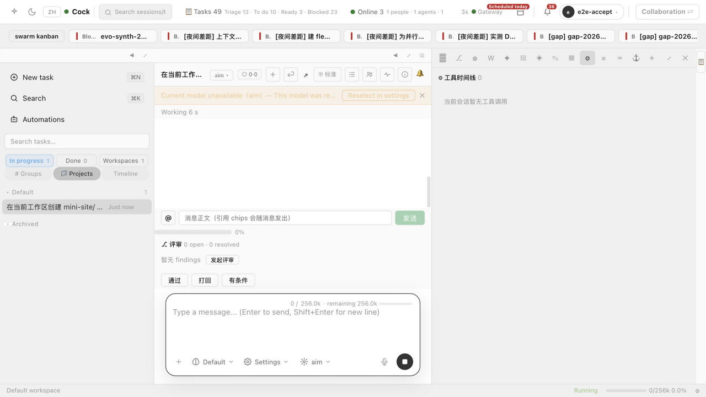
agent 真实执行：工具时间线实时捕获 7 个工具调用（Bash×4 + Write×3），状态栏遥测跳动（26 t/s、上下文水位）。
🔍 工具时间线 count=7 ✓ 状态遥测实时 ✓
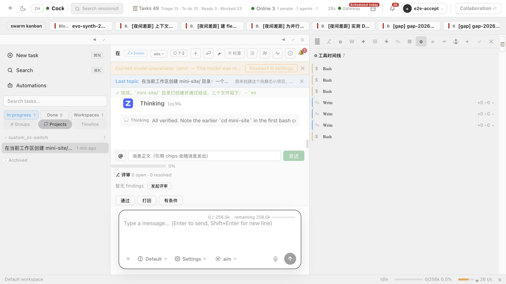
agent 报告完成：三文件创建+逐个读回验证（JSON 可解析/HTML 引用正确）。
🔍 回复含实测验证声明 ✓
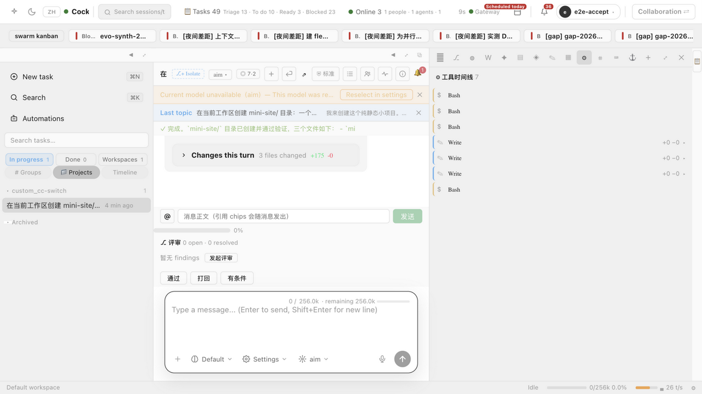
会话有工具调用后复截：7 行工具卡（$ Bash ×4 / ✎ Write ×3），类别色标+编辑卡 diff 预览展开钮。
🔍 count=7，Bash/Write 专属图标 ✓
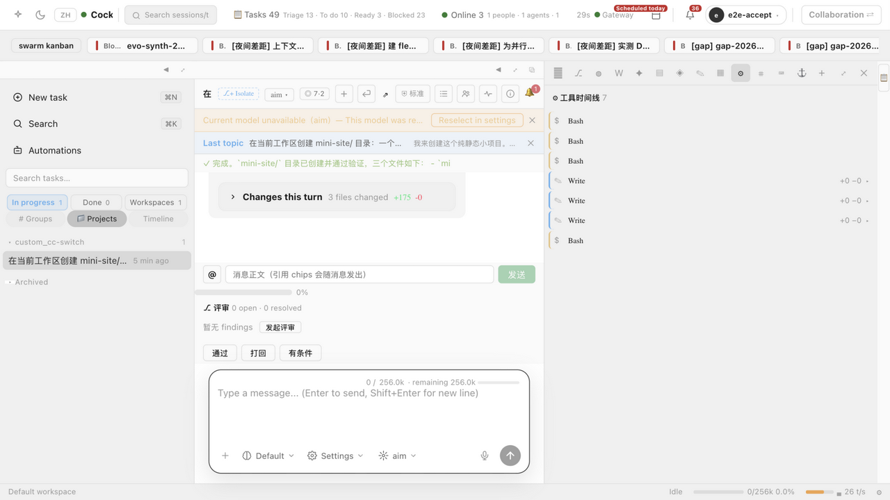
侧栏文件 tab + 状态栏真实读数：Default workspace / 0/256k 0.0% / 26 t/s / Idle / 上下文水位条。
🔍 水位条 testid=ide-context-bar ✓ 状态遥测实时值 ✓
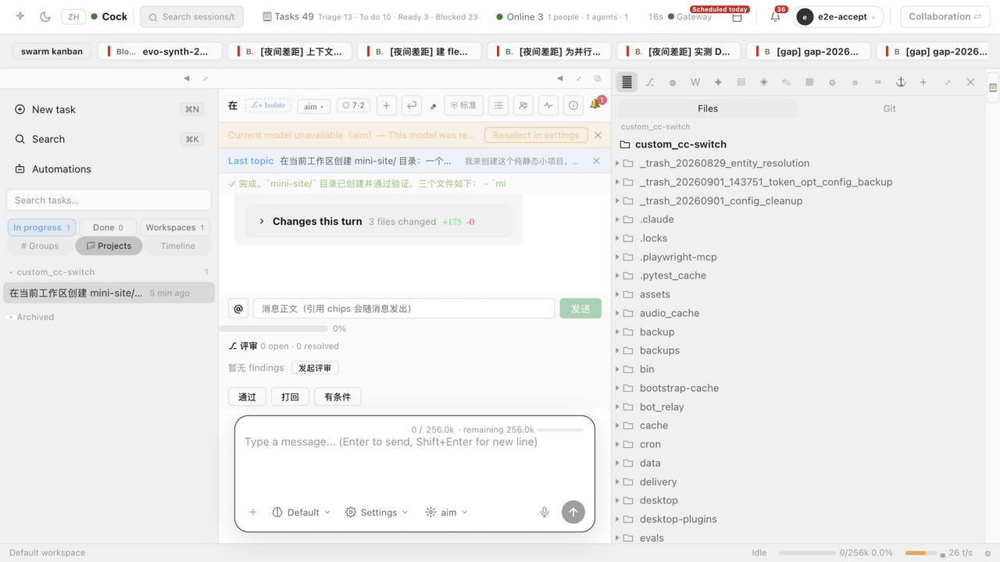